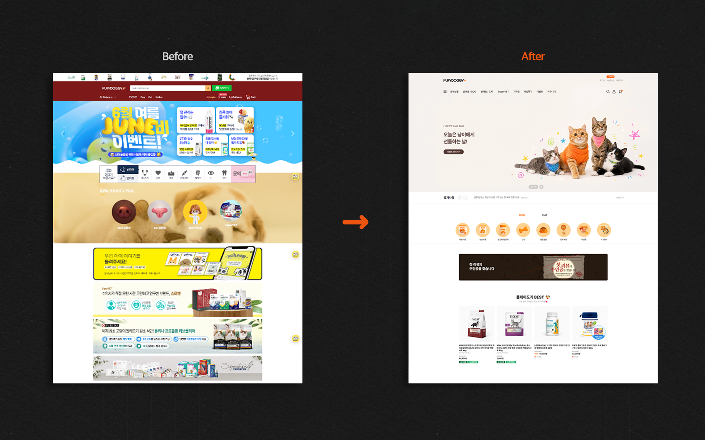

CUSTOMER
원하는 상품을 빨리 찾고 싶다.
- 인기 상품과 주요 카테고리를 빠르게 확인
- 필요한 제품군으로 짧게 이동
Brand × Commerce UX Case Study
상품 탐색은 더 빠르게, 브랜드 비주얼은 더 명확하게.

플랫폼 이전을 계기로 상품 탐색과 브랜드 콘텐츠의 우선순위를 다시 설계했습니다.
반려동물 전문 이커머스 플레이도기를 고도몰에서 Cafe24로 이전하며 쇼핑몰을 전면 리뉴얼했습니다. 기존 몰은 상품, 이벤트, 브랜드 콘텐츠가 한 화면에서 동시에 경쟁해 고객이 원하는 상품을 빠르게 찾기 어려운 구조였습니다.
단순히 화면을 새로 만드는 것이 아니라, 상품 탐색을 우선으로 정보 구조와 주요 UI를 재정리하는 것을 리뉴얼의 핵심 방향으로 잡았습니다.
Project thesis
고객이 찾는 상품을 먼저 보여주고,
브랜드가 알리고 싶은 콘텐츠는 구매 흐름 안에 자연스럽게 연결한다.
고객이 보고 싶은 것과 회사가 보여주고 싶은 것을 같은 구매 흐름 안에서 정리해야 했습니다.
CUSTOMER
BUSINESS
Problem statement
노출을 더하는 방식이 아니라,
무엇을 먼저 보여줄지 다시 설계해야 했습니다.

1 2 3Existing-page audit
상품·이벤트·브랜드 배너가 같은 강도로 경쟁했습니다.
주요 상품보다 운영 콘텐츠가 먼저 보였습니다.
컬러와 배너 스타일을 묶는 기준이 부족했습니다.
구매 목적에 맞춰 탐색 흐름을 다시 설계했습니다. 사용자가 원하는 상품에 빠르게 접근하고, 자연스럽게 카테고리와 브랜드 상품까지 탐색할 수 있도록 쇼핑 흐름을 정리했습니다.
Planning flow
Find → Explore → Connect친근한 반려동물 브랜드의 인상은 유지하되, 상품과 정보가 주인공이 되도록 컬러·타이포·이미지·강조 방식을 정리했습니다.
다양한 배너와 컬러가 한 화면에서 경쟁하던 기존 구조
여백과 일관된 강조색으로 상품과 탐색의 위계를 정리한 화면
Visual direction guide
상품이 먼저 보이도록 색상, 정보 위계, 이미지 사용 기준을 하나의 방향으로 맞췄습니다.
오렌지는 CTA와 핵심 정보에만 사용하고 뉴트럴 영역을 넓게 유지
명확한 크기 차이와 여백으로 상품명·가격·혜택의 읽는 순서를 정리
제품 중심 이미지와 친근한 요소를 결합하고 화면별 강조 방식을 통일
상품 탐색부터 구매까지 흐름을 단순하게 연결했습니다.
주요 카테고리를 첫 화면에서 바로 선택할 수 있도록 배치했습니다.
자사 상품이 탐색 과정에서 자연스럽게 노출되도록 구성했습니다.
프로모션 콘텐츠를 상품 탐색과 분리하지 않고 구매 동선 안에 연결했습니다.
주요 상품과 구매 페이지로 빠르게 이동할 수 있도록 동선을 단축했습니다.
디자인에 그치지 않고 실제 운영 환경까지 직접 구현했습니다. Cafe24 기반의 반응형 웹으로 구현하고, 쇼핑몰 운영과 콘텐츠 교체까지 연결했습니다.

Beyond launch
운영 중 반복적으로 교체되는 프로모션 콘텐츠까지 고려해, 실제 운영 가능한 구조로 제작했습니다.
리뉴얼로 달라진 쇼핑 경험과 운영 구조를 네 가지 변화로 정리했습니다.
What Changed
카테고리와 주요 진입점을 정리해 원하는 상품에 빠르게 접근할 수 있게 했습니다.
PB 상품을 별도 광고가 아닌 실제 쇼핑 동선 안에서 자연스럽게 발견하도록 구성했습니다.
프로모션에서 상품 탐색과 구매 페이지로 이어지는 흐름을 정리했습니다.
PC·Tablet·Mobile에서도 정보 위계와 구매 동선이 유지되도록 구현했습니다.